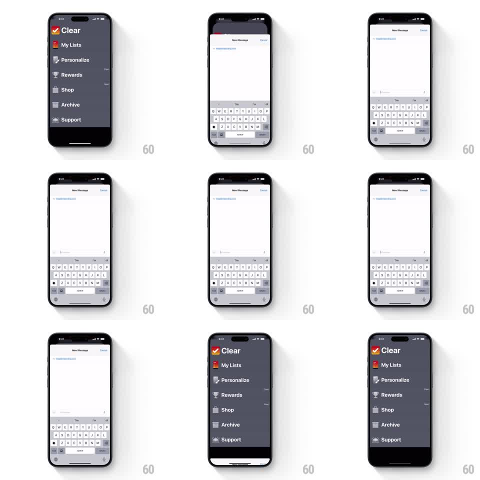

Media
Frame-by-frame

Rebuild this interaction 1:1: Clear's support mail sheet - a standard mail compose sheet slides up over Clear's dark menu, and dismissing it slides the sheet back down to reveal the menu exactly as it was.

Rebuild this interaction 1:1: Clear's support mail sheet - a standard mail compose sheet slides up over Clear's dark menu, and dismissing it slides the sheet back down to reveal the menu exactly as it was.
## Integration
Integration: stack-agnostic spec - springs given as stiffness/damping, timed motions as duration + curve; map every value to your framework and animation library of choice.
## Scene
Clear's dark menu (Clear logo, My Lists, Personalize, Rewards, Shop, Archive, Support rows). From Support, a white mail compose sheet ("New Message", To prefilled with a support address, Cancel at top right) rises over the menu with the keyboard up. Cancelling drops the sheet and keyboard back off the bottom, returning to the untouched menu.
## Motion spec
Pattern: modal sheet presentation and dismissal, gesture-driven, ~400ms each way.
- The sheet slides up from the bottom (350ms, ease-out), rounded top corners, the menu dimming slightly behind it.
- The keyboard rises with the sheet (same 350ms), the compose fields stacking above it.
- Typing moves the cursor; the sheet itself is static while presented.
- On Cancel (or a downward swipe past 100px), the keyboard drops first (200ms) and the sheet follows off the bottom (300ms, ease-in), the menu brightening back.
- A downward drag on the sheet's grab area tracks 1:1 and snaps back if released early (spring stiffness 350 damping 28).
## Calibration
- The sheet never covers the status bar - it stops at the safe area like a standard mail composer.
- The menu behind is fully preserved: same scroll position, same row states.
## Reduced motion
Sheet fades in and out.
## Don't miss
- The To field is prefilled and tinted - the user only writes the body.
- The sheet's top edge keeps its rounded corners against the dark menu throughout.